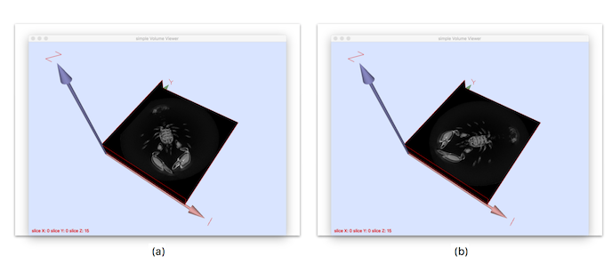

Flips 2D slice image of an 3D vol image (mirror transformation).
Usage: volFlip –input <volFileName> –imagePlane 0 1 –flipDimension 0 –o <volOutputFileName> (vol, longvol, p3d format)
Allowed options are :
-h [ --help ] display this message.
-i [ --input ] arg Input vol file.
--imagePlane arg arg= {0,1,2} x {0,1,2} defines the axis of
the slice image which will be transformed
(by default arg= 0 1 i.e. the slice image
defined in the X,Y plane (Z=cst)
--flipDimension arg specify which axis will be used to apply
the flip.
-o [ --output ] arg (=output.vol) Output filename.
Example:
$ volFlip --imagePlane 0 1 --flipDimension 0 -i ${
DGtal}/examples/samples/lobster.vol -o flippedXxyLobster.vol
You should obtain such a result:

(a) source image (b) flipped version.
- See also
- volFlip.cpp